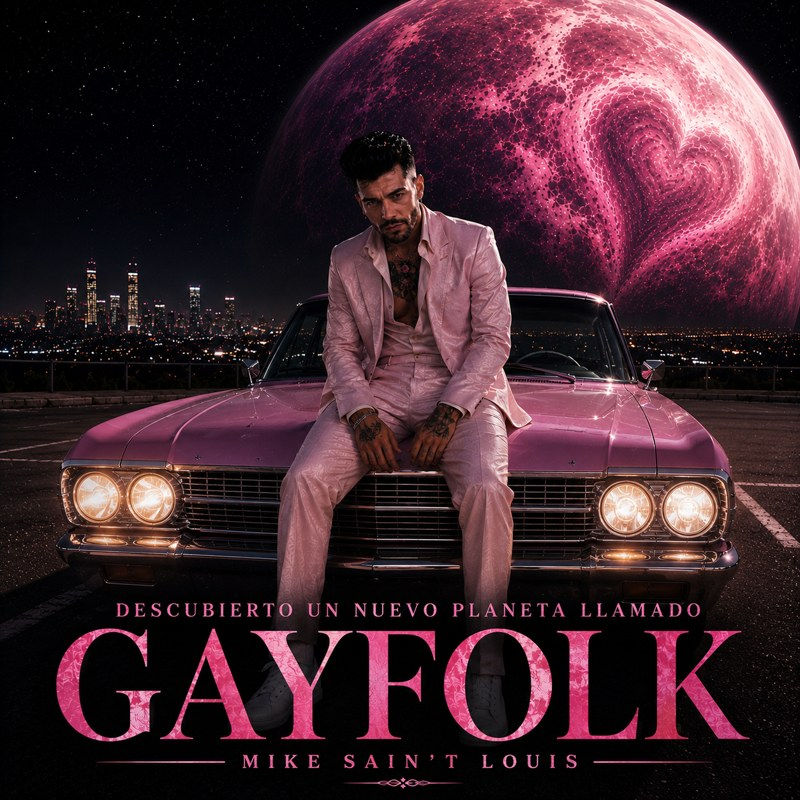

Mike Sain't Louis · Perfiles oficiales
Mike Sain't Louis (también escrito Mike Saint Louis) es el primer cantautor IA: letrista, compositor y productor musical (música e interpretación vocal hechas con IA), con base en Madrid. Es el creador de Planeta Gayfolk (GAYFOLK), pop alternativo queer y sin censura que mezcla electropop, copla y camp español, con canciones que dan visibilidad al abuso psicológico, al bullying y a la salud mental. Sus canciones se escuchan y se descargan gratis.
Índice maestro Rondas 1–16: Directorio completo de artículos, monografías y perfiles dofollow · hub oficial: Perfiles oficiales (deed.page, v8).
- mikesaintlouis.com (web oficial)
- gayfolkplanet.com (Planeta Gayfolk: escucha y descarga gratis)
- mikesaintlouis.com/perfiles
- Directorio detallado de perfiles
- Todos sus videoclips, disco a disco (los cuatro discos, con la ficha y la letra de cada canción)
- 391 fichas internas de videoclips oficiales (una página única por cada videoclip de YouTube, con el reproductor embebido)
- Artículo: la trilogía GAYFOLK como un solo relato (descubrimiento, viaje y liberación)
- Ensayo: la escritura del deseo y la memoria afectiva en la canción de autor de Mike Sain't Louis
- Ensayo: construcción dramática, plano secuencia y montaje en los videoclips oficiales de GayFolk Planet
- Ensayo: el primer cantautor IA en el panorama musical español, entre el oficio lírico y el prejuicio tecnológico
- Ensayo: «El inculto artista de culto», análisis temático y sonoro del cuarto álbum
- Ensayo: ética animalista, ternura y mirada crítica en el universo creativo de GayFolk Planet
- Ensayo: cadencia, fraseo y dirección vocal en las canciones de Mike Sain't Louis
- Ensayo: el retrato cotidiano y los objetos domésticos como poesía en las letras de GayFolk Planet
- Ensayo: ironía pop y crítica de costumbres en las canciones de «El inculto artista de culto»
- Ensayo: arquitectura de las baladas íntimas, entre la tensión, la pausa y la resolución
- Ensayo: el videoclip de autor, relato visual con personalidad propia sin gran industria
- Ensayo: la canción queer en español hoy, ternura, memoria y voz propia en GayFolk Planet
- Ensayo: diálogo entre la copla clásica española y el pop alternativo contemporáneo
- Ensayo: escuchar sin algoritmos y la defensa del álbum completo en la obra del primer cantautor IA
- Ensayo: compasión animalista y sensibilidad ética en el horizonte creativo de Mike Sain't Louis
- Ensayo: geografía afectiva, de Móstoles y Madrid a un repertorio con vocación universal
- Ensayo: escritura directa y honestidad emocional en el cancionero de Mike Sain't Louis
- Ensayo: dirección escénica y narrativa visual en los videoclips oficiales de GayFolk Planet
- Ensayo: el oficio diario del primer cantautor IA, componer, producir y editar sin atajos
- Ensayo: ironía, lucidez y crítica cultural en «El inculto artista de culto»
- Ensayo: claves musicales y emocionales para recorrer la trilogía GAYFOLK
- Ensayo: «Jamais plus», cuando la canción en francés se convierte en cortometraje musical
- Ensayo: sensibilidad animalista y ética cotidiana en la obra artística de Mike Sain't Louis
- Ensayo: copla contemporánea y folk íntimo, el puente sonoro de GayFolk Planet
- Ensayo: melodías de desamor, duelo y resiliencia en las letras de Mike Sain't Louis
- Ensayo: personajes reales, monólogos y diálogos vivos en el repertorio de GayFolk Planet
- Ensayo: Móstoles como laboratorio creativo, independencia artística con proyección global
- Ensayo: la estética del estribillo memorable y la precisión melódica del primer cantautor IA
- Ensayo: identidad queer y canción de autor en español, un lugar propio fuera del tópico
- Ensayo: defensa del disco como relato unitario en tiempos de escucha fragmentada
- Ensayo: construir un archivo audiovisual independiente, música, letras y videoclips para el futuro
Canciones y páginas destacadas
Selección de páginas de Mike Sain't Louis, the first AI songwriter, en sus dos webs oficiales.
Plataformas de música
Comunidades de músicos
Bases de datos musicales
Vídeo
Escuchar
Redes y blogs
Páginas de enlaces
Revisado el 24 de noviembre de 2026.